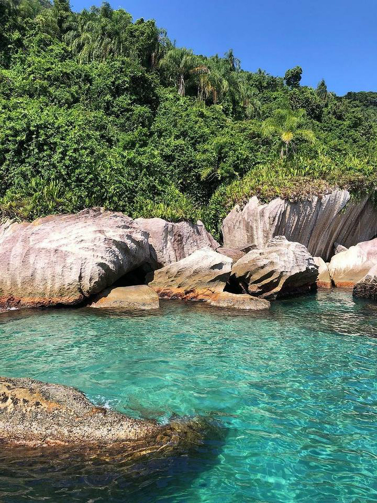
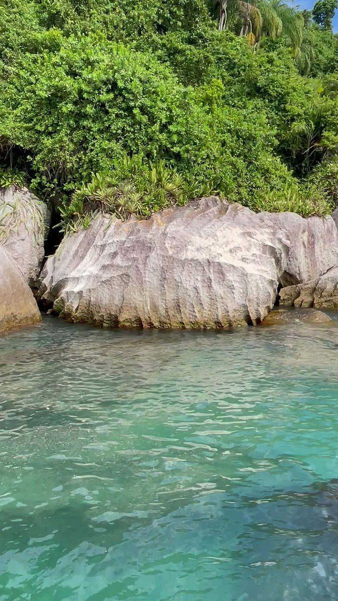

Parada 01 · Travessia
Rio Guaraú & Barra
Navegação tranquila pelas águas espelhadas do rio, passando pelos bancos de areia e pelo encontro do rio com o mar.

Piscina natural cristalina, cachoeira no mar na Praia do Arpoador e navegação pelo Rio Guaraú.
Saindo do Rio Guaraú, o barco segue até a piscina natural e a cachoeira no mar.
Navegação tranquila pelas águas espelhadas do rio, passando pelos bancos de areia e pelo encontro do rio com o mar.

Aquário natural protegido pelas rochas em frente à reserva, com águas verde-esmeralda calmas para flutuação e fotos inesquecíveis.

Refúgio selvagem cercado por Mata Atlântica intocada onde uma cachoeira de água doce deságua direto na areia da praia.


Toque em qualquer foto para ampliar.
Escolha paradas e passageiros para enviar pronto no WhatsApp da G-TRIP.

Barco seguro conduzido por Mestre experiente nas águas da barra e da Ilha do Guaraú.
"Lugar exuberante, barco seguro com Mestre experiente, muito bom passeio, vale a pena!"
"Beleza natural exuberante! Passeio incrível pela Ilha do Guaraú."
"Atendimento nota 10, travessia tranquila pelo rio e parada perfeita na ilha."
Do Rio Guaraú (Praia do Guaraú, Peruíbe - SP). Enviamos a localização exata no WhatsApp ao confirmar.
Não. Temos coletes salva-vidas homologados para adultos e crianças e parada em águas abrigadas.
Pela manhã o mar costuma estar mais espelhado e a piscina natural da ilha ainda mais cristalina.
Roupa de banho, toalha, protetor solar, óculos de sol, água e lanches leves.